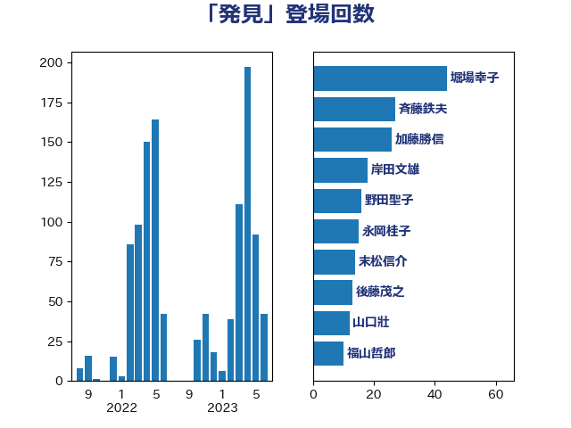

単語「発見」

| 堀場幸子 | 日本維新の会 | 44 回 |
| 斉藤鉄夫 | 公明党 | 27 回 |
| 加藤勝信 | 自由民主党 | 26 回 |
| 岸田文雄 | 自由民主党 | 18 回 |
| 野田聖子 | 自由民主党 | 16 回 |
| 永岡桂子 | 自由民主党 | 15 回 |
| 末松信介 | 自由民主党 | 14 回 |
| 後藤茂之 | 自由民主党 | 13 回 |
| 山口壯 | 自由民主党 | 12 回 |
| 福山哲郎 | 立憲民主党 | 10 回 |
| 阿部知子 | 立憲民主党 | 9 回 |
| 米山隆一 | 立憲民主党 | 9 回 |
| 川田龍平 | 立憲民主党 | 9 回 |
| 高橋千鶴子 | 日本共産党 | 8 回 |
| 穀田恵二 | 日本共産党 | 8 回 |
| 中島克仁 | 立憲民主党 | 8 回 |
| 高木かおり | 日本維新の会 | 7 回 |
| 青木愛 | 立憲民主党 | 7 回 |
| 田村智子 | 日本共産党 | 7 回 |
| 小倉將信 | 自由民主党 | 7 回 |
| 宮崎勝 | 公明党 | 7 回 |
| 嘉田由紀子 | 無所属 | 7 回 |
| 仁比聡平 | 日本共産党 | 7 回 |
| 井野俊郎 | 自由民主党 | 7 回 |
| 鈴木敦 | 国民民主党 | 6 回 |
| 紙智子 | 日本共産党 | 6 回 |
| 生稲晃子 | 自由民主党 | 6 回 |
| 清水貴之 | 日本維新の会 | 6 回 |
| 浅野哲 | 国民民主党 | 6 回 |
| 奥下剛光 | 日本維新の会 | 6 回 |
| 倉林明子 | 日本共産党 | 6 回 |
| 伊藤岳 | 日本共産党 | 6 回 |
| 伊佐進一 | 公明党 | 6 回 |
| 三浦信祐 | 公明党 | 6 回 |
| 高木真理 | 立憲民主党 | 5 回 |
| 音喜多駿 | 日本維新の会 | 5 回 |
| 青柳陽一郎 | 立憲民主党 | 5 回 |
| 阿部弘樹 | 日本維新の会 | 5 回 |
| 道下大樹 | 立憲民主党 | 5 回 |
| 自見はなこ | 自由民主党 | 5 回 |
| 渡辺周 | 立憲民主党 | 5 回 |
| 浜田靖一 | 自由民主党 | 5 回 |
| 比嘉奈津美 | 自由民主党 | 5 回 |
| 松沢成文 | 日本維新の会 | 5 回 |
| 木村次郎 | 自由民主党 | 5 回 |
| 山下芳生 | 日本共産党 | 5 回 |
| 室井邦彦 | 日本維新の会 | 5 回 |
| 天畠大輔 | れいわ新選組 | 5 回 |
| 大西健介 | 立憲民主党 | 5 回 |
| 三木圭恵 | 日本維新の会 | 5 回 |
| 青柳仁士 | 日本維新の会 | 4 回 |
| 青山大人 | 立憲民主党 | 4 回 |
| 野村哲郎 | 自由民主党 | 4 回 |
| 西村康稔 | 自由民主党 | 4 回 |
| 荒井優 | 立憲民主党 | 4 回 |
| 石橋通宏 | 立憲民主党 | 4 回 |
| 榛葉賀津也 | 国民民主党 | 4 回 |
| 林芳正 | 自由民主党 | 4 回 |
| 新垣邦男 | 立憲民主党 | 4 回 |
| 掘井健智 | 日本維新の会 | 4 回 |
| 平木大作 | 公明党 | 4 回 |
| 岬麻紀 | 日本維新の会 | 4 回 |
| 塩田博昭 | 公明党 | 4 回 |
| 城井崇 | 立憲民主党 | 4 回 |
| 吉田はるみ | 立憲民主党 | 4 回 |
| 吉田とも代 | 日本維新の会 | 4 回 |
| 住吉寛紀 | 日本維新の会 | 4 回 |
| 伊波洋一 | 無所属 | 4 回 |
| 中川康洋 | 公明党 | 4 回 |
| 齋藤健 | 自由民主党 | 3 回 |
| 長妻昭 | 立憲民主党 | 3 回 |
| 鈴木俊一 | 自由民主党 | 3 回 |
| 金子恭之 | 自由民主党 | 3 回 |
| 金城泰邦 | 公明党 | 3 回 |
| 赤嶺政賢 | 日本共産党 | 3 回 |
| 藤岡隆雄 | 立憲民主党 | 3 回 |
| 萩生田光一 | 自由民主党 | 3 回 |
| 石井苗子 | 日本維新の会 | 3 回 |
| 田村まみ | 国民民主党 | 3 回 |
| 牧山ひろえ | 立憲民主党 | 3 回 |
| 渡辺猛之 | 自由民主党 | 3 回 |
| 浅田均 | 日本維新の会 | 3 回 |
| 梅村みずほ | 日本維新の会 | 3 回 |
| 柚木道義 | 立憲民主党 | 3 回 |
| 本村伸子 | 日本共産党 | 3 回 |
| 平山佐知子 | 無所属 | 3 回 |
| 山際大志郎 | 自由民主党 | 3 回 |
| 山添拓 | 日本共産党 | 3 回 |
| 山本香苗 | 公明党 | 3 回 |
| 山崎正恭 | 公明党 | 3 回 |
| 小森卓郎 | 自由民主党 | 3 回 |
| 宮本徹 | 日本共産党 | 3 回 |
| 大島九州男 | れいわ新選組 | 3 回 |
| 塩川鉄也 | 日本共産党 | 3 回 |
| 古川元久 | 国民民主党 | 3 回 |
| 佐々木さやか | 公明党 | 3 回 |
| 伊藤孝恵 | 国民民主党 | 3 回 |
| 高良鉄美 | 無所属 | 2 回 |
| 鎌田さゆり | 立憲民主党 | 2 回 |
| 鈴木義弘 | 国民民主党 | 2 回 |
| 鈴木宗男 | 日本維新の会 | 2 回 |
| 近藤昭一 | 立憲民主党 | 2 回 |
| 角田秀穂 | 公明党 | 2 回 |
| 西村明宏 | 自由民主党 | 2 回 |
| 菅家一郎 | 自由民主党 | 2 回 |
| 芳賀道也 | 国民民主党 | 2 回 |
| 羽田次郎 | 立憲民主党 | 2 回 |
| 簗和生 | 自由民主党 | 2 回 |
| 窪田哲也 | 公明党 | 2 回 |
| 稲津久 | 公明党 | 2 回 |
| 石井正弘 | 自由民主党 | 2 回 |
| 田中健 | 国民民主党 | 2 回 |
| 熊谷裕人 | 立憲民主党 | 2 回 |
| 漆間譲司 | 日本維新の会 | 2 回 |
| 浜地雅一 | 公明党 | 2 回 |
| 浜口誠 | 国民民主党 | 2 回 |
| 浅川義治 | 日本維新の会 | 2 回 |
| 沢田良 | 日本維新の会 | 2 回 |
| 江藤拓 | 自由民主党 | 2 回 |
| 永井学 | 自由民主党 | 2 回 |
| 森本真治 | 立憲民主党 | 2 回 |
| 森屋宏 | 自由民主党 | 2 回 |
| 松原仁 | 立憲民主党 | 2 回 |
| 杉尾秀哉 | 立憲民主党 | 2 回 |
| 新妻秀規 | 公明党 | 2 回 |
| 打越さく良 | 立憲民主党 | 2 回 |
| 川崎ひでと | 自由民主党 | 2 回 |
| 川合孝典 | 国民民主党 | 2 回 |
| 小沼巧 | 立憲民主党 | 2 回 |
| 小林鷹之 | 自由民主党 | 2 回 |
| 安江伸夫 | 公明党 | 2 回 |
| 大塚耕平 | 国民民主党 | 2 回 |
| 塩村あやか | 立憲民主党 | 2 回 |
| 堀内詔子 | 自由民主党 | 2 回 |
| 坂本祐之輔 | 立憲民主党 | 2 回 |
| 勝部賢志 | 立憲民主党 | 2 回 |
| 勝目康 | 自由民主党 | 2 回 |
| 勝俣孝明 | 自由民主党 | 2 回 |
| 加藤鮎子 | 自由民主党 | 2 回 |
| 加田裕之 | 自由民主党 | 2 回 |
| 井上哲士 | 日本共産党 | 2 回 |
| 中条きよし | 日本維新の会 | 2 回 |
| ながえ孝子 | 無所属 | 2 回 |
| たがや亮 | れいわ新選組 | 2 回 |
| 鰐淵洋子 | 公明党 | 1 回 |
| 高橋英明 | 日本維新の会 | 1 回 |
| 高橋はるみ | 自由民主党 | 1 回 |
| 高市早苗 | 自由民主党 | 1 回 |
| 馬淵澄夫 | 立憲民主党 | 1 回 |
| 須藤元気 | 無所属 | 1 回 |
| 青山繁晴 | 自由民主党 | 1 回 |
| 青山周平 | 自由民主党 | 1 回 |
| 門山宏哲 | 自由民主党 | 1 回 |
| 長浜博行 | 無所属 | 1 回 |
| 鈴木英敬 | 自由民主党 | 1 回 |
| 鈴木庸介 | 立憲民主党 | 1 回 |
| 野間健 | 立憲民主党 | 1 回 |
| 野田国義 | 立憲民主党 | 1 回 |
| 野田佳彦 | 立憲民主党 | 1 回 |
| 重徳和彦 | 立憲民主党 | 1 回 |
| 里見隆治 | 公明党 | 1 回 |
| 遠藤良太 | 日本維新の会 | 1 回 |
| 輿水恵一 | 公明党 | 1 回 |
| 足立敏之 | 自由民主党 | 1 回 |
| 西銘恒三郎 | 自由民主党 | 1 回 |
| 西村智奈美 | 立憲民主党 | 1 回 |
| 西岡秀子 | 国民民主党 | 1 回 |
| 藤巻健太 | 日本維新の会 | 1 回 |
| 落合貴之 | 立憲民主党 | 1 回 |
| 若松謙維 | 公明党 | 1 回 |
| 舩後靖彦 | れいわ新選組 | 1 回 |
| 笠井亮 | 日本共産党 | 1 回 |
| 竹内譲 | 公明党 | 1 回 |
| 福島みずほ | 社会民主党 | 1 回 |
| 福岡資麿 | 自由民主党 | 1 回 |
| 神谷政幸 | 自由民主党 | 1 回 |
| 神谷宗幣 | 参政党 | 1 回 |
| 神津たけし | 立憲民主党 | 1 回 |
| 石田昌宏 | 自由民主党 | 1 回 |
| 石川香織 | 立憲民主党 | 1 回 |
| 石川大我 | 立憲民主党 | 1 回 |
| 石川博崇 | 公明党 | 1 回 |
| 石原正敬 | 自由民主党 | 1 回 |
| 田野瀬太道 | 無所属 | 1 回 |
| 田村貴昭 | 日本共産党 | 1 回 |
| 田嶋要 | 立憲民主党 | 1 回 |
| 田中昌史 | 自由民主党 | 1 回 |
| 片山大介 | 日本維新の会 | 1 回 |
| 滝波宏文 | 自由民主党 | 1 回 |
| 津島淳 | 自由民主党 | 1 回 |
| 泉健太 | 立憲民主党 | 1 回 |
| 河野太郎 | 自由民主党 | 1 回 |
| 河西宏一 | 公明党 | 1 回 |
| 池下卓 | 日本維新の会 | 1 回 |
| 武部新 | 自由民主党 | 1 回 |
| 櫻井周 | 立憲民主党 | 1 回 |
| 櫛渕万里 | れいわ新選組 | 1 回 |
| 横沢高徳 | 立憲民主党 | 1 回 |
| 横山信一 | 公明党 | 1 回 |
| 森山浩行 | 立憲民主党 | 1 回 |
| 森屋隆 | 立憲民主党 | 1 回 |
| 梅谷守 | 立憲民主党 | 1 回 |
| 柴田巧 | 日本維新の会 | 1 回 |
| 柴山昌彦 | 自由民主党 | 1 回 |
| 柳ヶ瀬裕文 | 日本維新の会 | 1 回 |
| 枝野幸男 | 立憲民主党 | 1 回 |
| 松野明美 | 日本維新の会 | 1 回 |
| 村田享子 | 立憲民主党 | 1 回 |
| 杉田水脈 | 自由民主党 | 1 回 |
| 杉本和巳 | 日本維新の会 | 1 回 |
| 末松義規 | 立憲民主党 | 1 回 |
| 木原稔 | 自由民主党 | 1 回 |
| 早坂敦 | 日本維新の会 | 1 回 |
| 斎藤アレックス | 国民民主党 | 1 回 |
| 広瀬めぐみ | 自由民主党 | 1 回 |
| 岩谷良平 | 日本維新の会 | 1 回 |
| 岡本あき子 | 立憲民主党 | 1 回 |
| 山本剛正 | 日本維新の会 | 1 回 |
| 小沢雅仁 | 立憲民主党 | 1 回 |
| 小川淳也 | 立憲民主党 | 1 回 |
| 小島敏文 | 自由民主党 | 1 回 |
| 寺田学 | 立憲民主党 | 1 回 |
| 宮本岳志 | 日本共産党 | 1 回 |
| 宮崎雅夫 | 自由民主党 | 1 回 |
| 宮口治子 | 立憲民主党 | 1 回 |
| 奥野総一郎 | 立憲民主党 | 1 回 |
| 大野敬太郎 | 自由民主党 | 1 回 |
| 大岡敏孝 | 自由民主党 | 1 回 |
| 大串博志 | 立憲民主党 | 1 回 |
| 堤かなめ | 立憲民主党 | 1 回 |
| 國場幸之助 | 自由民主党 | 1 回 |
| 和田義明 | 自由民主党 | 1 回 |
| 吉田統彦 | 立憲民主党 | 1 回 |
| 吉田久美子 | 公明党 | 1 回 |
| 吉川赳 | 無所属 | 1 回 |
| 吉川沙織 | 立憲民主党 | 1 回 |
| 古賀友一郎 | 自由民主党 | 1 回 |
| 友納理緒 | 自由民主党 | 1 回 |
| 北神圭朗 | 無所属 | 1 回 |
| 務台俊介 | 自由民主党 | 1 回 |
| 佐藤正久 | 自由民主党 | 1 回 |
| 伊藤渉 | 公明党 | 1 回 |
| 伊東信久 | 日本維新の会 | 1 回 |
| 仁木博文 | 無所属 | 1 回 |
| 中谷真一 | 自由民主党 | 1 回 |
| 中谷一馬 | 立憲民主党 | 1 回 |
| 中村裕之 | 自由民主党 | 1 回 |
| 中山展宏 | 自由民主党 | 1 回 |
| 三上えり | 立憲民主党 | 1 回 |